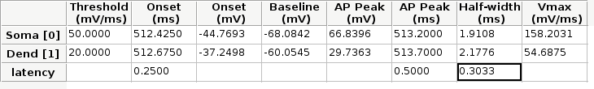

Calculating latencies¶
| Authors: | Jose Guzman |
|---|---|
| Updated: | 08 November, 2017 |
Very often we want to analyze data in Stimfit that is generated from a simulation or stored in non-stardard formats, like for example fluorescence. While Stimfit supports a huge variety of file formats, data from more exotic sources can be copied to a text file loaded in with a very simple Python script.
Examples of such cases are NEURON files, which are saved as text files as *.dat format. Alternatively, users configure custom files formats to, for example, analyze the timecourse of a fluorescent measurement with Stimfit.
Reading NEURON text files¶
NEURON allows to save a simulation in a very simple text file format. The file consists of a header with two lines containing the event that was recorded and the number of samples. After that, it is followed by the recording time and the sampled data data in a two-column format. To load such a file, we would like to skip the first two rows, and to load the adquisition time.
import stf
def loadnrn(file):
"""
Loads a NEURON datafile and opens a new Stimfit window
with a trace with the default units (e.g ms and mV)
file -- (string) file to read
"""
time, trace = np.loadtxt(fname = file, skiprows = 2, unpack= True )
dt = time[1] # the second temporal sampling point is the sampling
stf.new_window( trace )
stf.set_sampling_interval( dt )
You can download an example of such a file here
Note that the argument of the function loadnrn is a string containing the exact path and filename of the file that we want to load. For very lengthy paths, it can be convenient to write a small gadget that cares about the proper identification of the file. This is what we propose in the section below.
Custom ascii files containing fluorescence¶
When creating custom text files to be loaded later, it is generally convenient to take into account the folowing advices:
- Use a custom extension ( generally dat, .text or similar denote files associated with specific applications).
- Add comments that contains the experimental conditions.
- Information about the author and date of file modification can be included in the header inside these comments.
In the example below, a function will load a file with extension *.GoR that contains fluorescent measurements in time (acquired at 400 Hz). In addition, a small wx gadget will allow us to create a small window to select the file that we want to import.
import stf
Stimfit was originally used to calculate synaptic latencies (Katz and Miledi, 1965 [1]) but now can be used to calculate synaptic latencies and latencies between events or action potentials in the same or between different channels (see Latency measurements in the Stimfit manual). Stimfit also provides a very useful collection of Python functions which allow us to easily adapt the latency calculation for our particular conditions. We will use these functions to calculate the latency between two signals in two different channels (e.g. one corresponding to the soma, and another to the dendrite). We will use the object oriented programming paradigm (OOP) to solve this problem and applied it in the embedded Python shell of Stimfit .
The Spike class¶
We will create an object to calculate basic action potential (AP) kinetics in the current/active channel. AP peak and half-width will be calculated from a threshold (in mV/ms) defined by the user, as described in Stuart et al. (1997) [2]. In principle, this can be easily adjusted in the Stimfit menu toolbar (see Edit->Cursor settings and select Peak tab). However, as the number of traces to analyze increase, the manipulation of the menu becomes unnecessarily repetitive and prone to errors. We will use the object to access different AP parameters (i.e baseline, peak, half-width and maximum rise-time) all them calculated from the threshold value. Note these values are accessible in Stimfit result table (see Fig. 9 in the Stimfit manual), but we will access them within Python.
Note
Once the threshold is set, it can be accessed in terms of time with stf.get_threshold_time()) or voltage with stf.get_threshold_value().
Additionally, some other methods will be necessary to calculate the AP latencies. For example, we may want to calculate onset latency (i.e time difference between the beginning of the action potential in two different recordings) or peak latency (i.e difference in time between the peak of two APs in different recordings). More interestingly, we can calculate the half-width latency according to Schmidt-Hieber et al., (2008) [3] . In this last case, the AP latency is calculated by the time different between the times of the AP at its half-maximal amplitudes.
import stf
from math import ceil, floor
class Spike(object):
"""
A collection of methods to calculate AP properties
from threshold (see Stuart et al., 1997). Note that all
calculations are performed in the active/current channel!!!
"""
def __init__(self,threshold):
"""
Create a Spike instance with sampling rate and threshold
measurements are performed in the current/active channel!!!
Arguments:
threshold -- slope threshold to measure AP kinetics
"""
self._thr = threshold
# set all the necessary AP parameters at construction
self._updateattributes()
def _updateattributes(self):
"""
update base, peak, t50, max_rise and tamplitude
"""
self.base = self.get_base() # in Stimfit is baseline
self.peak = self.get_peak() # in Stimfit peak (from threshold)
self.t50 = self.get_t50() # in Stimfit t50
self.max_rise = self.get_max_rise() # in Stimfit Slope (rise)
self.thr = self.get_threshold_value() # in Stimit Threshold
# attributes necessary to calculate latencies
self.tonset = self.get_threshold_time()
self.tpeak = self.get_tamplitude()
self.t50_left = self.get_t50left()
def update(self):
""" update current trace sampling rate,
cursors position and measurements (peak, baseline & AP kinetics)
according to the threshold value set at construction or when
the object is called with a threshold argument.
"""
# set slope
stf.set_slope(self._thr) # on stf v0.93 or above
# update sampling rate
self._dt = stf.get_sampling_interval()
# update cursors and AP kinetics (peak and half-width)
stf.measure()
def __call__(self, threshold=None ):
""" update AP kinetic parameters to a new threshold in the
current trace/channel
threshold (optional) -- the new threshold value
Examples :
dend = Spike(40) # set the spike threshold at 40mV/ms
dend(20) # now we set the spike threshold at 20mV/ms
The AP parameters will be thereby updated in the current
trace/channel. This method allow us to use the same object
to calculate AP latencies in different traces.
"""
if threshold is not None:
self._thr = threshold # set a new threshold
self.update() # update dt and sampling rate
self._updateattributes()
def get_base(self):
"""
Get baseline according to cursor position in the
given current channel/trace
"""
self.update()
return stf.get_trace(trace = -1 ,channel = -1)[stf.get_base_start():stf.get_base_end()+1].mean()
def get_peak(self):
"""
calculate peak measured from threshold in the current trace,
(see Stuart et al (1997)
"""
stf.set_peak_mean(1) # a single point for the peak value
stf.set_peak_direction("up") # peak direction up
self.update()
peak = stf.get_peak()-stf.get_threshold_value()
return peak
def get_t50(self):
""" calculates the half-width in ms in the current trace"""
self.update()
# current t50's difference to calculate half-width (t50)
return (stf.t50right_index()-stf.t50left_index())*self._dt
def get_max_rise(self):
"""
maximum rate of rise (dV/dt) of AP in the current trace,
which depends on the available Na+ conductance,
see Mainen et al, 1995, Schmidt-Hieber et al, 2008
"""
self.update()
pmaxrise = stf.maxrise_index() # in active channel
trace = stf.get_trace(trace = -1, channel =-1) # current trace
dV = trace[int(ceil(pmaxrise))]-trace[(int(floor(pmaxrise)))]
return dV/self._dt
def get_tamplitude(self):
""" return the time a the peak in the current trace"""
#stf.peak_index() does not update cursors!!!
self.update()
return stf.peak_index()*self._dt
def get_t50left(self):
""" return the time at the half-width """
self.update()
return stf.t50left_index()*self._dt
def show_threshold(self):
""" return the threshold value (in mV/ms) set at construction
or when the object was called"""
return self._thr
def get_threshold_value(self):
""" return the value (in y-units) at the threshold """
self.update() # stf.get_threshold_value does not update
return stf.get_threshold_value()
def get_threshold_time(self):
""" return the value (in x-units) at the threshold """
self.update()
return stf.get_threshold_time('True')
Code commented¶
Note that all methods but show_threshold() are preceded by self.update(). This is to update the sampling rate of the current trace (necessary to transform index points into time) and the position of the cursors. In this way, we are sure that every function will return the values according to the current trace and the update position of the cursors.
Because we want to group all the AP parameters (i.e baseline, peak, half-width and max rise) of a single trace together, we set the object attributes to the following values;
def _updateattributes(self):
self.base = self.get_base() # in Stimfit is baseline
self.peak = self.get_peak() # in Stimfit peak (from threshold)
self.t50 = self.get_t50() # in Stimfit t50
self.max_rise = self.get_max_rise() # in Stimfit slope (rise)
# attributes necessary to calculate latencies
self.tpeak = self.get_threshold_time()
self.tamplitude = self.get_tamplitude()
These values refer to the trace present in the current Stimfit window when the object was created. This will allow us to store them for future calculations.
Note for example, that if we create an object with threshold 40
>>> myspike = Spike(40)
and move after that to another trace, we could calculate the difference between the peaks of the previous and present trace as follows:
>>> myspike.peak - myspike.get_peak()
the former will give the peak value when in the trace where the object was created, and the later will return the peak in the current trace.
Additionally, we can decide to change the threshold value of the AP in a trace. For that, we can type:
>>> myspike(20)
And now the Spike attributes will be updated with the new threshold in the current trace. The function __call__ allows to call the object with a given argument, and we used it to set a different threshold and update the object attributes.
Usage¶
To use this class we have to create an object in the current trace with a threshold value as argument. Do not forget to set both baseline and peak cursors before creating the object.
>>> soma = spells.Spike(50)
Now we can calculate the parameters with the methods available to this object. Note that these values change as we change the trace (i.e, we do not need to type update() or use stf.measure()). This means that the method soma.get_base() will return different values if we call it in different traces or move the cursors. Compare the values obtained with the functions with the corresponding values in the result table of Stimfit.
>>> soma.get_base() # correspond to baseline in the results table
>>> soma.get_peak() # correspond to Peak (from threshold) in the results table
>>> soma.get_t50() # correspond to t50 in the results table
>>> soma.get_max_rise() # correspond to slope (rise) in the results table
>>> soma.get_threshold_value() # correspond to Threshold in the results table
Additionally, we have methods like get_tamplitude(), get_threshold() and get_threshold_time() to calculate latencies with different methods. For example, if we have two different Spike objects, one corresponding to the soma and the other corresponding to the dendrite, we could calculate calculate the latencies with the 3 following methods.
- 1.- Onset latency: this is the latency between the beginning of 2 APs. We can calculate it as follows:
>>> soma = spells.Spike(50) # threshold of somatic AP is 50mV/ms
>>> stf.set_channel(1) # move to channel 2
>>> dend = spells.Spike(20) # threshold for dendritic AP is 20mV/ms
>>> latency = dend.tonset - soma.tonset
- 2.- Peak latency: this is the latency between the peaks of 2 APs. Similarly to the previous calculate, we can use:
>>> latency = dend.tpeak - soma.tpeak
- 3.- T50 latency: this method is included in the Edit option of the Stimfit menu toolbar. However, this menu assumes that both thresholds are the same. If we want to set different latencies for the calculation of the t50 latency, we can the Spike property called t50left:
>>> latency = dend.t50_left - soma.t50_left
You can find the class Spike described above in your current Stimfit version. To use it, you can import it from the spells module with the following command;
>>> from spells import Spike
>>> soma = Spike(50)
>>> dend = Spike(20) # in a different trace/window
Additionally, the spells module contains a function which creates a result table (see Figure bellow) with all the AP kinetic parameters described previously, and the latency calculated with the 3 methods described here. Once the soma and dend objects are created with the class Spike, we can use the latency function:
>>> from spells import latency
>>> latency(soma,dend) # both soma and dend are Spike objects
note that this function assumes that you set the cursors property in your trace, and that the dendritic and somatic AP are already initialized and contains the AP attributes of some trace.
Result table returned by the AP.calc() function.
Note
In the figure, the cell highlighted represent the latency calculated as the difference between the times at the half-width of the AP (as we did previously), and NOT the difference between the half-widths!!!
| [1] | Katz B, Miledi R (1965). The measurement of synaptic delay, and the time course of acetylcholine release at the neuromuscular junction. Proc R Soc Lond B Biol Sci. 161, 483-495 |
| [2] | Stuart G, Schiller J, Sakmann B (1997). Action potential initiation and propagation in rat neocortical pyramidal neurons. J Physiol. 505, 617-632 |
| [3] | Schmidt-Hieber C, Jonas P, Bischofberger J (2008). Action potential initiation and propagation in hippocampal mossy fibre axons. J Physiol. 586, 1849-1857. |
| [4] | Mainen ZF, Joerges J, Huguenard JR, Sejnowski TJ (1995). A model of spike initiation in neocortical pyramidal neurons. Neuron 15, 1427-1439. |